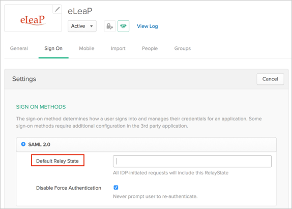
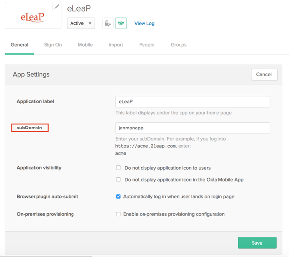

Send an email to to the eLeap Support team requesting that they enable SAML 2.0 for your account.
Copy and save the following as metadata.xml, and include it with your email.
Sign in to the Okta Admin app to have this variable generated for you.
Ask eLeap to provide you with the Default Relay State.
In Okta, select the Sign On tab for the eLeap app, then click Edit.
Enter the value eLeap provided into the Default Relay State field.
Click Save.

Still in Okta, select the General tab for the eLeap app, then click Edit.
Enter your subDomain.
Click Save.

eLeap will notify you when SAML has been enabled..
Done!
Notes:
IdP-initiated flows are supported.
SP-initiated flows and Just in Time (JIT) provisioning are not supported.